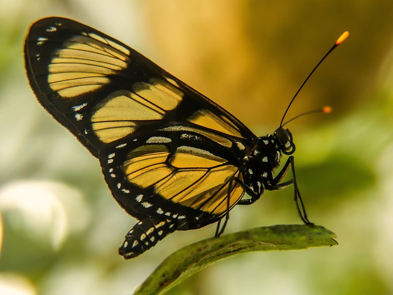

Borboletas
Elas são lepidoptera é uma ordem de insetos que inclui as borboletas e mariposas. Os lepidópteros compõem a segunda maior diversidade de insetos do planeta e são encontrados em quase todas as regiões do mundo, principalmente em locais tropicais. Wikipédia
As suas características
As borboletas são artrópodes pertencentes à Classe Insecta. Assim, apresentam corpo dividido em cabeça, tórax e abdome; um par de antenas, três pares de patas, e também asas, estas encontradas somente nesta classe, embora nem todos os seus representantes as possuam.
Abaixo podemos ver uma bela foto de uma borboleta.
Etimologia
O nome Lepidoptera é derivado do grego e significa “asa com escamas”. Essa é a característica mais marcante da Ordem: dois pares de asas membranosas cobertas por escamas. São as escamas, inclusive, que dão às borboletas e mariposas as cores e desenhos pelos quais são conhecidas.Rhopalocera e Heterocera também tem seus nomes intimamente ligados às características que os classificam, sendo que Rhopalocera, também do grego, quer dizer “Antenas clavadas” (rhopalo = clave, kera = chifre/antena)e Heterocera, de mesma origem, portanto, “antenas diversas” (hetero = diverso). A palavra “mariposa” vem, aparentemente do espanhol, da expressão “Mari, posa!” (Maria, pousa!), como uma brincadeira infantil. Quanto a "borboleta", há controvérsias. Uma hipótese é que proveio de papilio ("borboleta", em latim), como os romanos as chamavam.